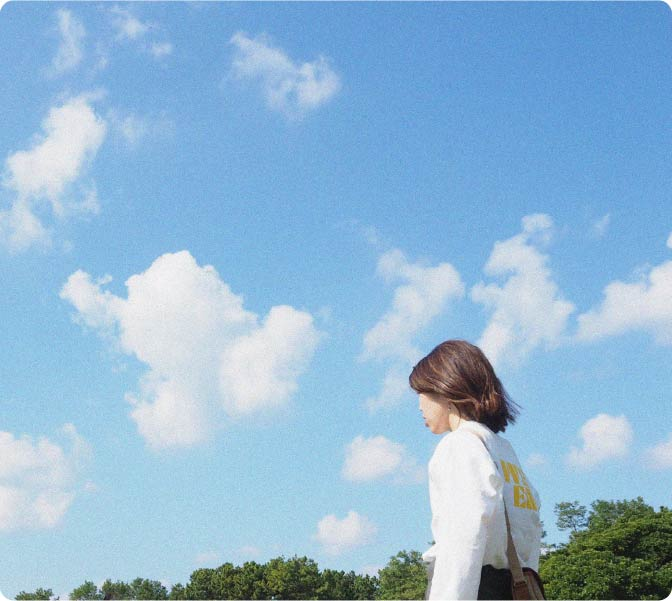

自己紹介

コムラ
家族の転勤に左右されず、自分らしく過ごせる方法について考えていた時にWebサイト制作の世界を知りました。
「とりあえずやってみよう」から
「もっとできるようになりたい」へ。
新しいチャレンジですが今日も楽しく学べている環境に感謝です。

経歴
- 2007
- 管理栄養士として病院勤務。在職中は専門性を高めるために糖尿病療養指導士やNST専門療法士を取得。職場によってはブログを書いたりラジオに出たりも。悩んだり楽しんだり、沢山のことに挑戦させていただきました。
- 2016
- 結婚にて転勤族となる＆金沢へ転居。これまでの経験を活かし管理栄養士として病院勤務。職場では金沢の魅力を沢山教えていただけ、人の温かさに改めて感謝し、大いに楽しんだ1年でした。
- 2019
- 名古屋にて子育て中、事務職のパート勤務を開始。育児との両立を叶えられるよう挑戦した職種でしたが、丁寧なサポートのおかげで毎日楽しく様々なお仕事をさせていただきました。ここでの経験がマルチタスクを正確にこなす能力を養うことにつながったと感じています。
- 2023
- 福岡に転居＆Web制作の勉強を開始。転居のタイミングで今後の生きかた(壮大･･･)を検討しはじめる。興味があることをみつけられることに、挑戦できる環境であることに感謝しながら、Webデザイン、コーディングについて学び始める。
- 現在
- Webデザインを仕事にできるよう学習中
これから
学習をはじめてから難しいと感じることばかりですが、だんだんかたちになっていく様子はものづくりならではで、達成感に魅了されています。 目標は創造をかたちにできる力を身につけること。 知識と技術の習得のため継続して学習に取り組みます。 これまでに培ってきた傾聴力、マルチタスクに対応する柔軟さ、持ち合わせていた慎重さを強みに、訪れた人に想いが伝わるホームページ作りを目指しています。